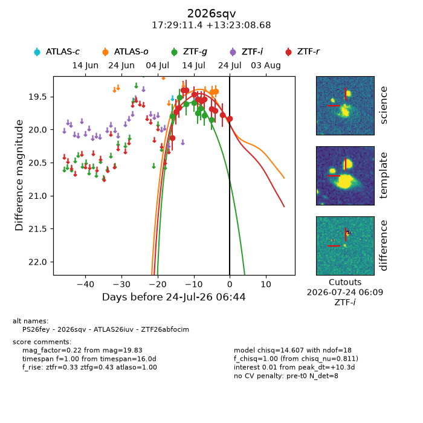
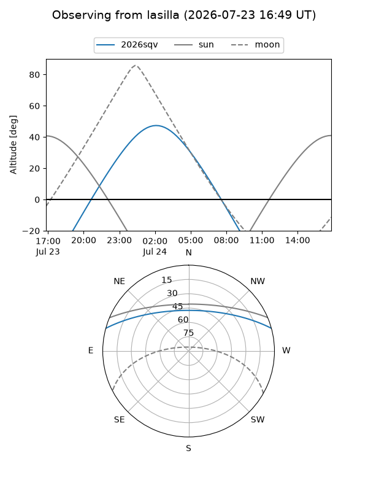
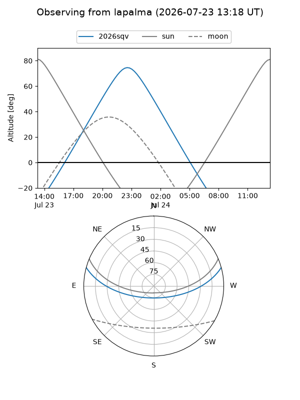
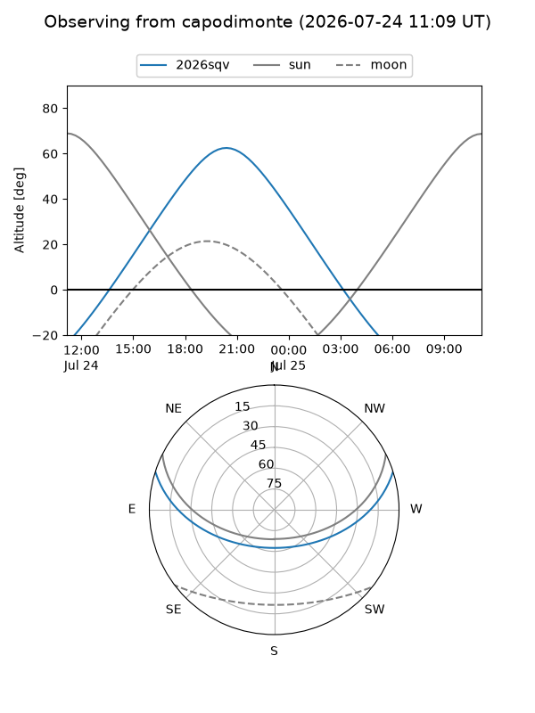
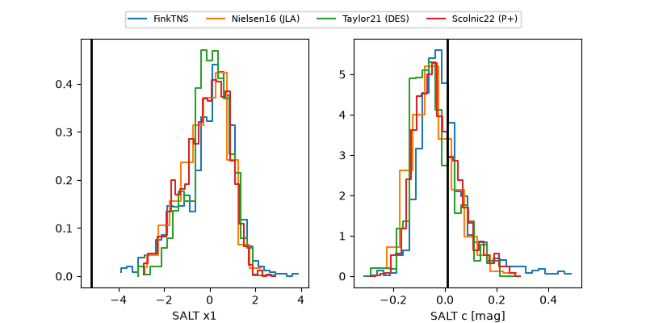

2026sqv
Target 2026sqv at 2026-07-24 06:46
Aliases and brokers:
FINK-ZTF: ztf.fink-portal.org/ZTF26abfocim
Lasair-ZTF: lasair-ztf.lsst.ac.uk/objects/ZTF26abfocim
ALeRCE-ZTF: alerce.online/object/ZTF26abfocim
YSE-PZ: ziggy.ucolick.org/yse/transient_detail/2026sqv
TNS name: wis-tns.org/object/2026sqv
Direct TNS query: direct search
alt names
ZTF26abfocim (ztf,fink_ztf)
2026sqv (tns,yse)
ATLAS26iuv (atlas)
PS26fey (panstarrs)
Coordinates:
equatorial (ra, dec) = 262.2977,+13.38575
equatorial (HMS+DMS) = 17:29:11.44,+13:23:08.68
galactic (l, b) = (36.0889,+24.18289)
Flags:
TNS type: nan
peak dt: +10.3
Photometry:
last atlaso=19.42, ztfg=19.85, ztfr=19.83
2 atlaso, 8 ztfg, 13 ztfr detections
Lightcurve

Visibility



Additional plots
